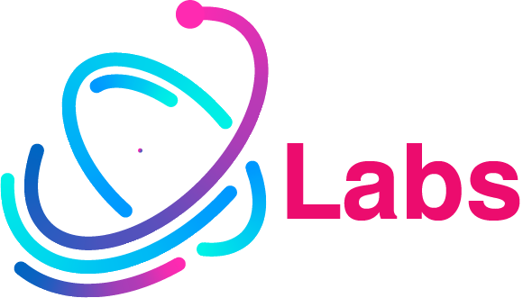

<ion-toolbar>
  <div class="header">
    
  </div>
</ion-toolbar>

<ion-content [fullscreen]="true">
  <ion-breadcrumbs>
    <ion-breadcrumb href="/home">Home</ion-breadcrumb>
  </ion-breadcrumbs>

  <br>
  <ion-button expand="block" href="/cidades">Cidades</ion-button>
</ion-content>